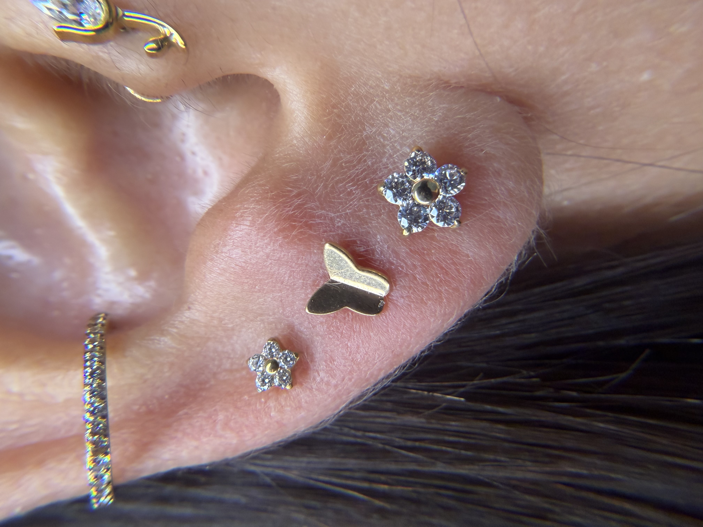
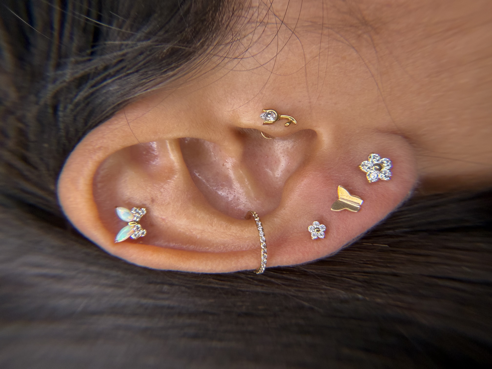
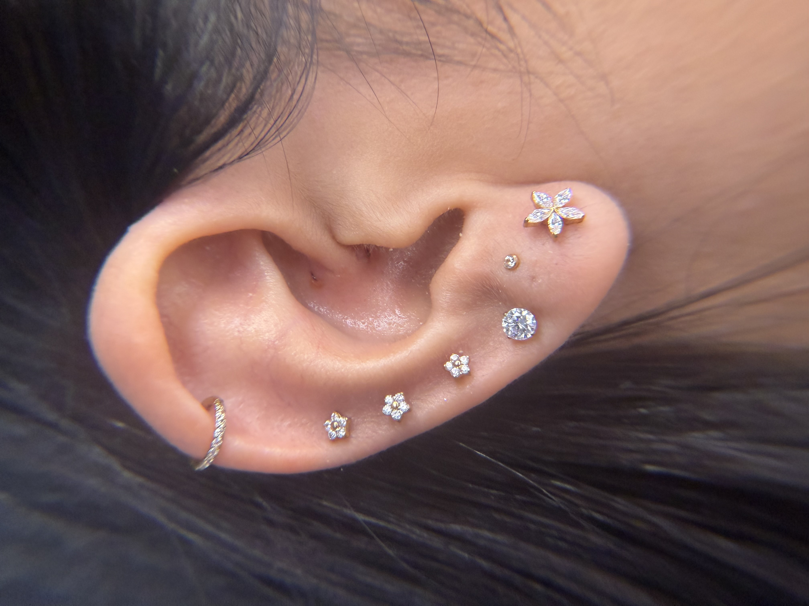

Estúdio especializado em body piercing delicado e feminino em Sumaré/SP
Uma história de transformação, coragem e amor pela arte do piercing delicado.
A história do estúdio nasceu a partir de um momento de transformação pessoal. Durante muitos anos trabalhei no setor bancário, até que o ritmo intenso acabou afetando minha saúde, levando ao desenvolvimento de burnout. Foi um período de muitas reflexões e de busca por um novo caminho.
Nesse processo de recomeço, conheci a profissão de body piercing. O que inicialmente surgiu como uma possibilidade acabou despertando em mim uma nova paixão. Decidi estudar, me dedicar e iniciar uma nova trajetória profissional, construindo algo com propósito e significado.
Assim nasceu o estúdio, com a proposta de mostrar que o piercing também pode ser delicado, elegante e feminino, valorizando a beleza natural e a personalidade de cada mulher. Mais do que um procedimento, o estúdio busca ser um espaço de cuidado, acolhimento e atenção, onde cada cliente se sinta segura e confiante.
Ajudar mulheres a expressarem sua personalidade com elegância e segurança através da arte do piercing.
Proporcionar uma experiência segura, delicada e profissional em body piercing, valorizando a beleza e a autoestima de cada cliente com técnica e atendimento humanizado.
Ser reconhecida como estúdio de referência em piercing pela qualidade do trabalho, cuidado com a saúde e pela experiência acolhedora oferecida a cada cliente.
Segurança, respeito, profissionalismo, delicadeza estética e transparência — pilares que guiam cada procedimento e cada atendimento no estúdio.
Cada procedimento realizado com técnica apurada, materiais esterilizados e o cuidado que você merece.
Especialidade do estúdio. Análise da harmonia e formato da orelha para um resultado elegante, personalizado e bem posicionado.
Procedimento realizado com protocolo rigoroso de higiene e segurança, priorizando o conforto durante toda a experiência.
Técnica cuidadosa e materiais de qualidade para uma cicatrização saudável e um resultado belo e seguro.
Procedimento especializado para correção e reconstrução do lóbulo da orelha, sem necessidade de cortes cirúrgicos.
Limpeza profissional dos furos e das joias, cuidando da saúde e higiene da sua orelha com atenção e delicadeza.
Consultoria personalizada antes do piercing: análise do formato da orelha e do seu estilo para a escolha das joias ideais.
Tem dúvidas sobre qual procedimento é ideal para você?
Falar com a especialistaCada trabalho é único — elegância e delicadeza em cada detalhe.



Acompanhe mais trabalhos no Instagram
@furinhochic.piercingA experiência de quem já viveu o cuidado e a elegância do Furinho Chic.
"Depoimento em breve — nossa cliente vai contar a experiência!"
— Cliente Furinho Chic"Depoimento em breve — nossa cliente vai contar a experiência!"
— Cliente Furinho Chic"Depoimento em breve — nossa cliente vai contar a experiência!"
— Cliente Furinho Chic"Depoimento em breve — nossa cliente vai contar a experiência!"
— Cliente Furinho Chic"Depoimento em breve — nossa cliente vai contar a experiência!"
— Cliente Furinho ChicAgende sua visita ou tire suas dúvidas. Teremos prazer em atendê-la!
Rua Santo Agostinho, 520
Jardim das Oliveiras — Sumaré/SP
Terça a sábado: 8h às 18h
Domingo e segunda: fechado